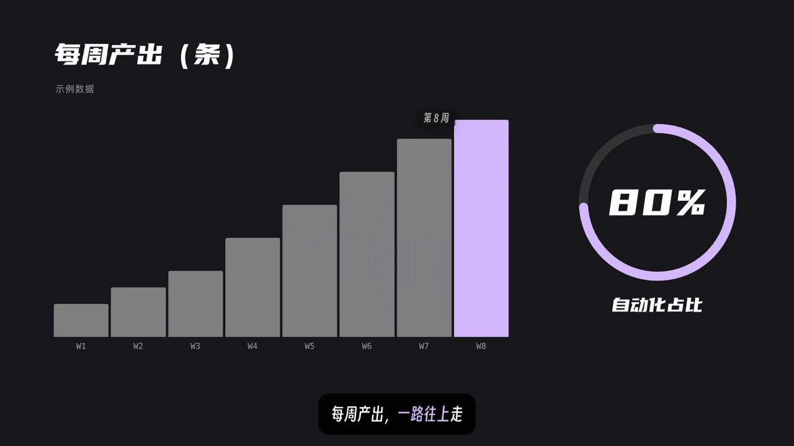

20
倍
同一道题，账单差了这么多
一句补充说明，念到时点亮
官方定价页
输出价格直接
砍半

看右边这个圈
旁边只放一句话，不要抄截图里的字
同一道题
谁更
省钱
？
方案 A
$3
一次任务的账单
方案 B
$60
同一道题
每周产出
第 6 周开始
起飞
40
条 / 周
记住三条
选模型的
铁律
① 先看单次任务的总账单
② 难题用旗舰，杂活用便宜的
③ 拿自己的真实任务测一遍
四个案例
挨个看
一口气过一遍
每个风格
一秒
四步出片
顺着走一遍
① 写稿
② 配音
③ 画面
④ 发布
实测截图
看起来一切正常
但是，等一下
这里写反转的那一句
便宜的干杂活，
贵的啃硬骨头
你现在主力用哪个？评论区聊聊